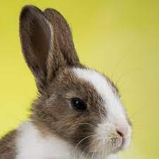

Por ser uma raça de pelo curto, uma escovação por semana já é o suficiente para retirar os pelos soltos e manter a pelagem macia e brilhante, mas durante as épocas de troca de pelo o ideal é escová-lo pelo menos duas vezes por semana Os demais cuidados são os mesmos para qualquer coelho, mas ao adquirir um como pet, o indicado é realizar uma consulta de orientação com um(a) médico)(a) especializado em pets não convencionais (silvestres e exóticos) para obter informações sobre como criá-lo de forma adequada e saber as particularidades da espécie.

Luciana
Luciana
O coelho Polonês, também conhecido como Hermelin e Arminho, apesar de ter como nome “Polonês” (Polish), não foi desenvolvido na Polônia, embora haja dúvidas quanto sua origem. Alguns autores acreditam que foi criado na Rússia, outros na Holanda e outros na Alemanha, mas apesar dessa discrepância sobre onde ele surgiu, o primeiro registro da raça foi em meados de 1860 na Inglaterra.